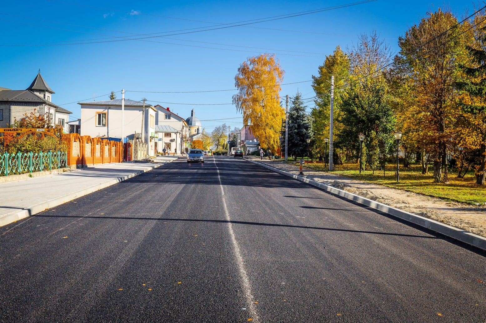

Witam, nazywam się Bogdan. Mam 17 lat, jestem z małego miasteczka Skalat w regionie Ternopil.
 Główna ulica miasta{kind=link}
W tym mieście przeżyłem znaczną część mojego życia. Po ukończeniu szkoły przeprowadziłem się do miasta Zboriv, gdzie kontynuowałem studia (uczę się do dziś).
Hobby i zainteresowania
Jestem zwykłym facetem XXI-wc, więc co mogę mieć hobby lub zainteresowanie?) Więc, jak wszyscy,
lubię grać w różne gry i oglądać różne filmy, serie i anime...
W wolnym czasie mogę Graj z
Friends Volleyball (ulubiony sport!) Lubię też podróżować do różnych interesujących miejsc na
Ukrainie.
- Kamenetz-Podolsky Fortress
- Khotyn Fortress
- Góra Tarasova
- Zamek Medzibiv
- Zamast Zbarazh
- Zamek Palanok
- Sofia Park i inni
Treść producenta
Zacząłem to zapoznać w 2016 roku, w tym czasie stworzyłem swój pierwszy kanał, na którym uczyłem różne filmy na temat rozrywki (kanał został usunięty). Już w 2017 roku zacząłem zainteresować się rozwijaniem gier na telefony, więc zacząłem uczyć projektanta gier - Sketchware i poświęcił swój kanał temu tematowi, ale coś poszło nie tak...
A na początku lata 2021 r. Stworzył nowy kanał, w którym mijam gry (od 2022 r. Przestał prowadzić kanał przez wojnę). Próbował także nadawać Twich. Ale został koronowany, więc zostałem na YouTube.
Znajomość IT
W 2019 r. Zacząłem uczyć układu, a pod koniec 2020 roku zacząłem uczyć Pythona odtąd, że moje życie zostało z tym ściśnięte. Wszystkie projekty, nad którymi Projekty
Tłumaczenie mangi
W 2021 r. Zacząłem tłumaczyć mangę, pierwszą maną była "Chłopiec, który został kotem"to osiem stron, ale kiedy to przetłumaczyłem, czułem się jak bohater! Potem poszedł mój drogi tłumacz i całą mangę, którą przetłumaczałeś, możesz wyświetlić na zakładce Manga